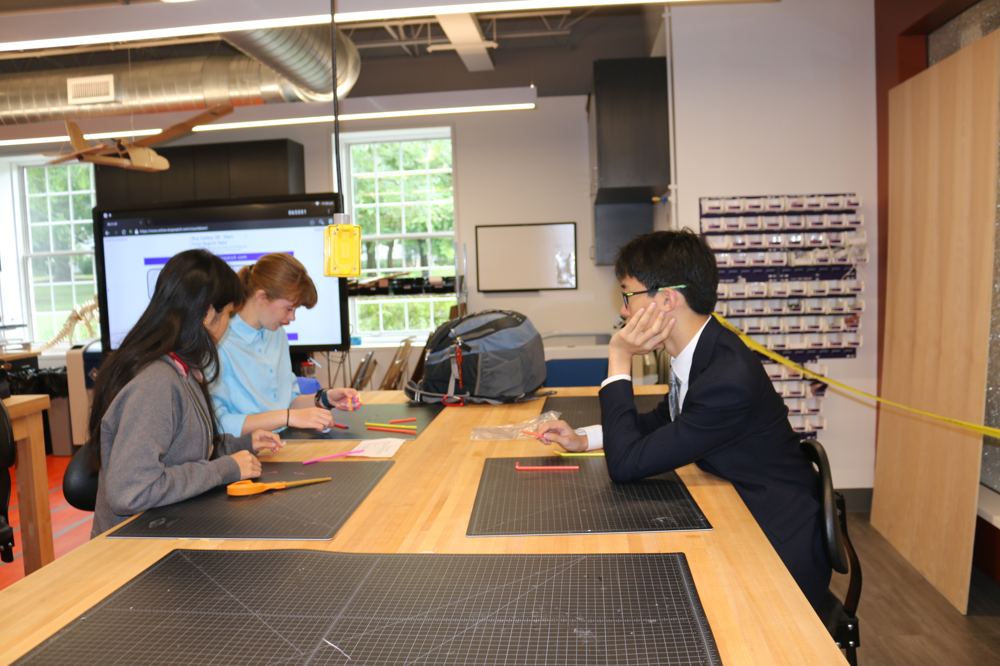
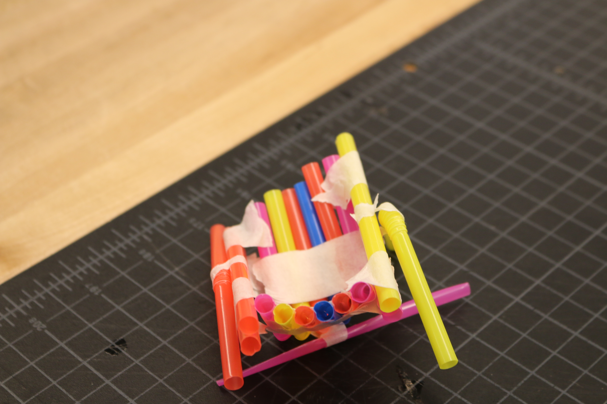
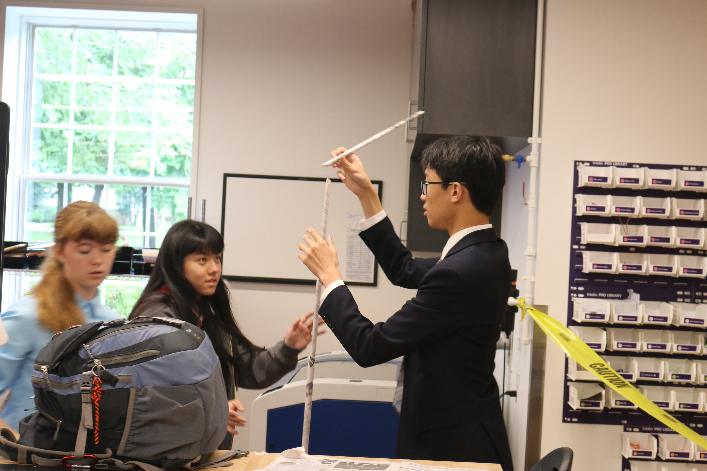
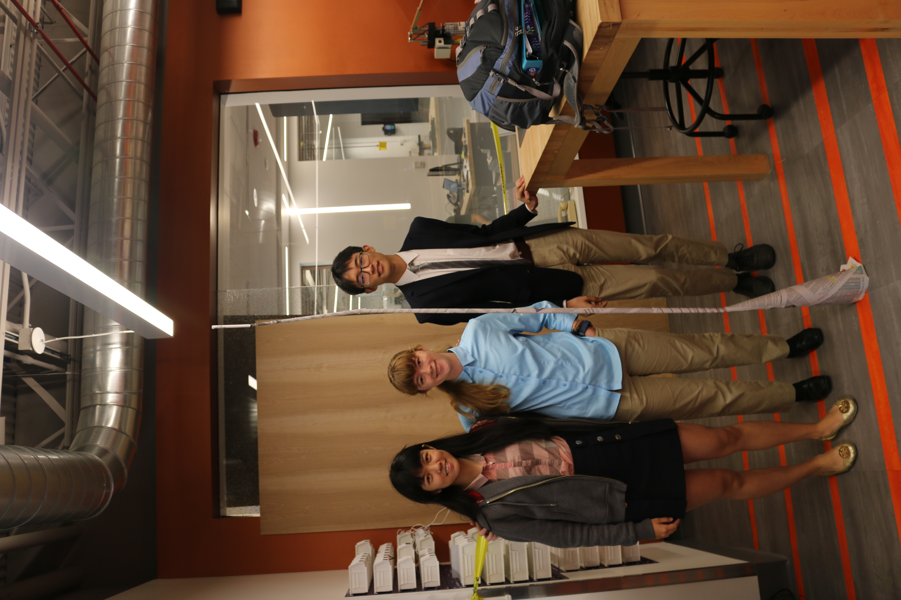

|  |  |  |  |
|---|---|---|---|
| Group Challenge with Clara and Ilyana. The first one is to build a device with straws that would stop the pingpong ball from above and hold it. Only three straws are allowed to touch the ground, and the pingpong ball will be droped from 5 feet. | The final product after a short period of work. The design was a basket made by bending six or seven parallel straws. In this design, more than three straws would be touching the ground if we place it down, so I put a vertival straw under the bottom of the basket so that only one straw is touching the ground now. It still failed though, pingpong ball bounced off. | Second challenge is to build the highest paper tower with several newspapers. Hanging from the ceiling is not counted. | First we planned to make thin cylinders by rolling newspapers diagnally and stacking together. However, after hearing that all groups from the last session had their towers fell down, I suggested that we sacrifice some height for a more stable cone-shaped base. The result is successful --- the tower did not fell and its final height is 88 inches, beating all other groups in both classes :) |